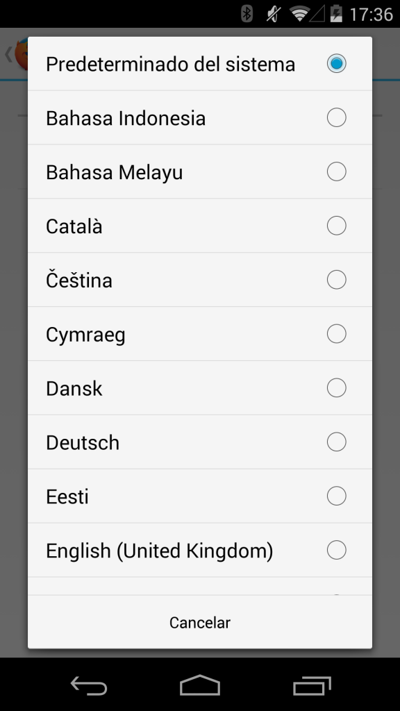
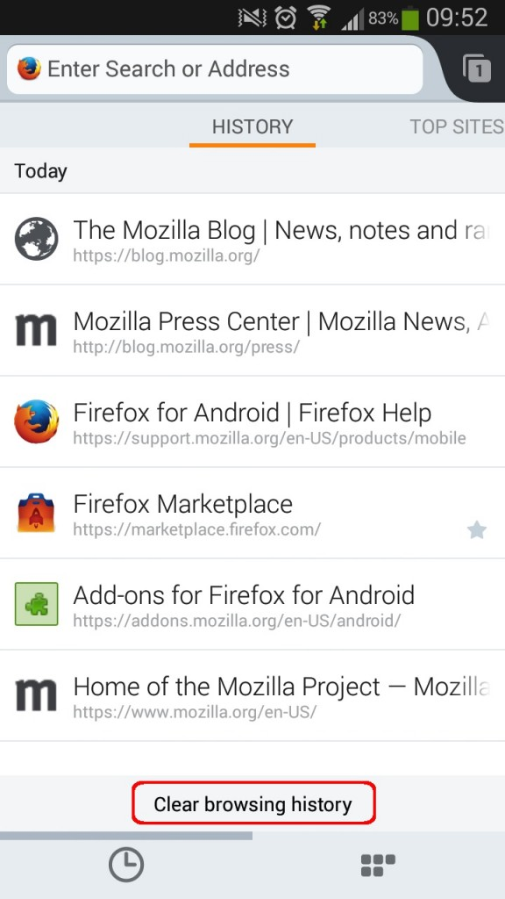

輕鬆切換語言、自訂主畫面、清除歷史紀錄
使用者現在可在 Firefox for Android 上打造個人化的 Web 經驗，不論身處於世界何方，都能更快、更輕鬆、更安全的找到自己所需的 Web 內容。
且不論你原先是以哪種語言版本的裝置下載 Firefox for Android，現在更能隨時切換達五十五種語言。透過新的語言切換功能，你不需重新啟動瀏覽器，即可輕鬆設定自己想要的語言。也就是說，不管你使用何種語系的 Android 裝置，都能輕鬆切換 Firefox for Android 的所有語言版本。我們今天另新增了亞美尼亞語 (Armenian)、巴斯克語 (Basque)、富拉赫語 (Fulah)、冰島語 (Icelandic)、蘇格蘭蓋爾語 (Scottish Gaelic)、威爾斯語 (Welsh) 等語言。

可自訂主畫面
在最近的 Firefox 版本中，首頁的「歷史紀錄 (History)」、「最常瀏覽 (Top Sites)」、「閱讀清單 (Reading List)」、「書籤 (Bookmarks)」都提供了多樣的自訂選項。而使用者現在也能進一步自訂 Firefox for Android。我們讓你能直接透過主畫面存取不同的 RSS、網站、服務，如Instagram、Pocket、Vimeo、Wikipedia。
Pocket 的執行長 Nate Weiner 就說：「Firefox for Android 是最佳的行動瀏覽器，可迅速將文章、影片、連結儲存到 Pocket 之上。現在的新主畫面更具備 Pocket Hits，讓使用者輕動指尖就能在 Pocket 中享受最多儲存與分享次數的內容。」
你可直接將主畫面視為行動瀏覽器的新附加元件，輕點幾下就能收納自己最關心的事項。當然也能透過「設定 (Setting)」選單輕鬆管理主畫面。
清除歷史紀錄
Mozilla 更讓你能輕鬆享受安全且隱私的瀏覽經驗，在使用者結束瀏覽活動之前，都能清除自己的歷史紀錄。只要注意「歷史紀錄」主畫面的底端，就能看到「清除瀏覽記錄 (Clear browsing history)」的選項。輕觸該選項就會立刻清除你的歷史紀錄。

Firefox Sync 同步功能
不論你是在桌機、平板電腦、智慧型手機上使用 Firefox 瀏覽器，Firefox Sync 同步功能都能讓你取得自己慣用的書籤、密碼、分頁，還有更多。如果你還沒用過 Firefox Sync，我們也會協助你輕鬆設定完畢。只要在分頁頂端找到「Sync」圖示並點擊，Firefox for Android 就會引導你逐步設定帳戶。
更多資訊
原文連結：Make Firefox for Android Yours: Switch Languages Easily, Customize Home Screens and Clear History